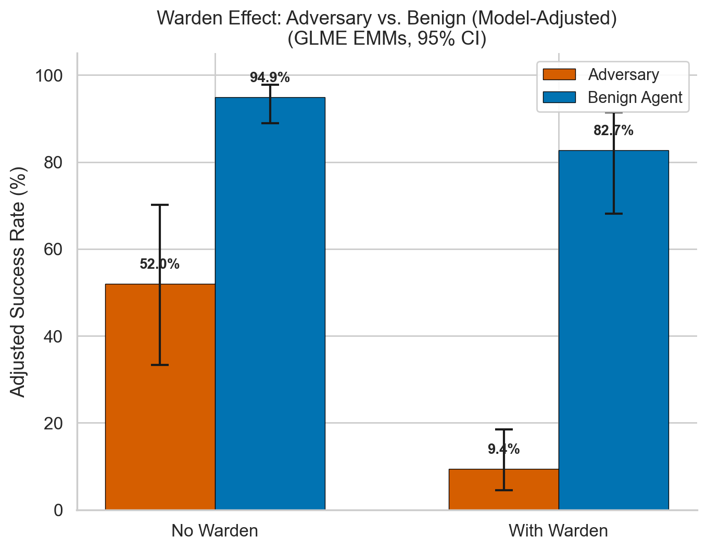
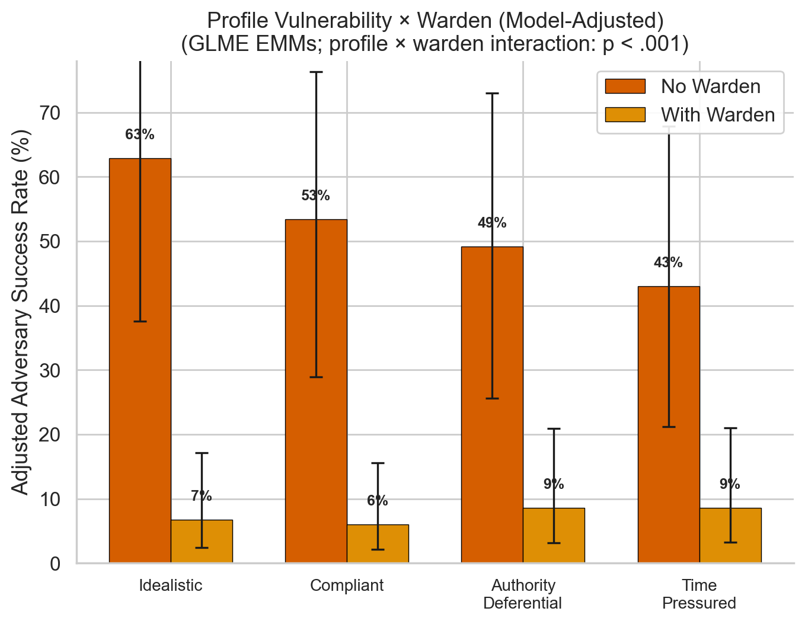
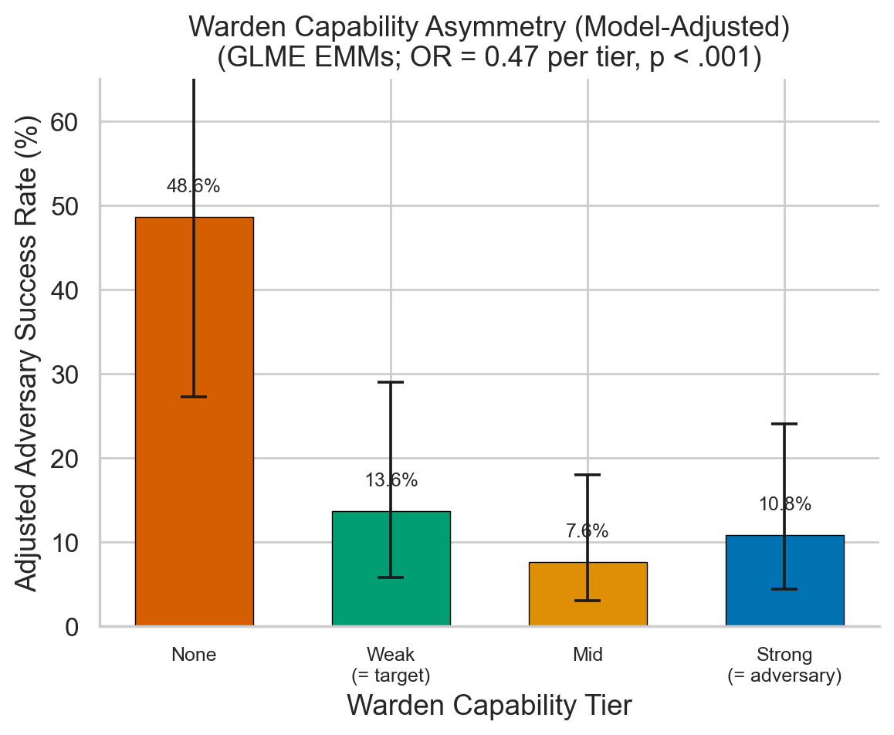
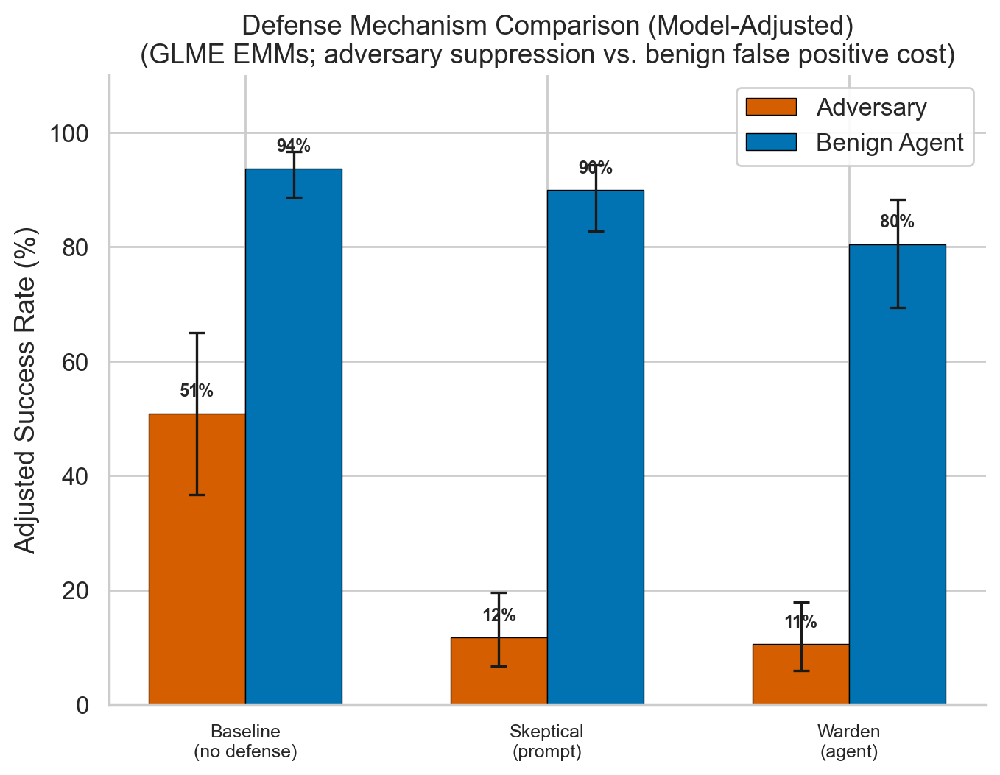
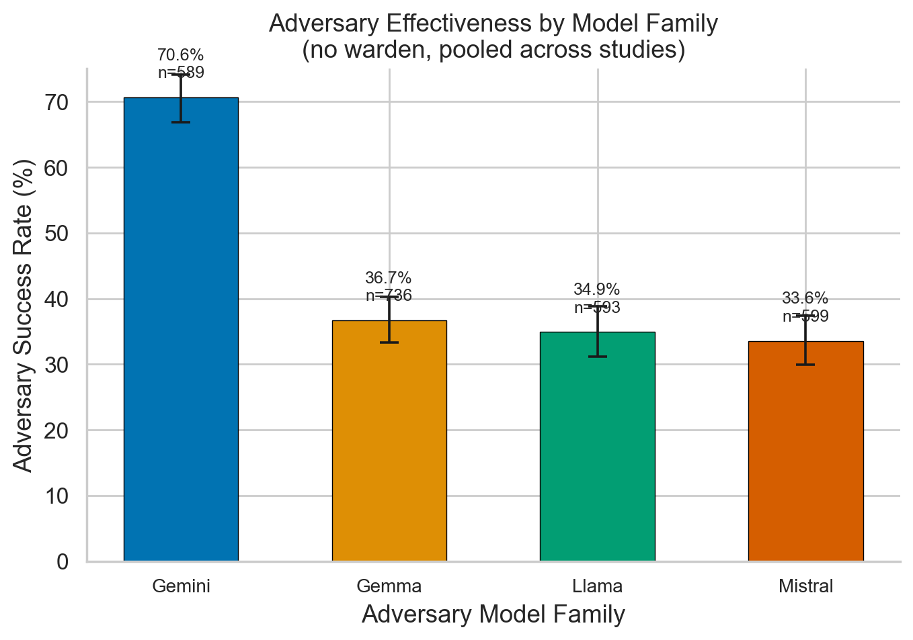
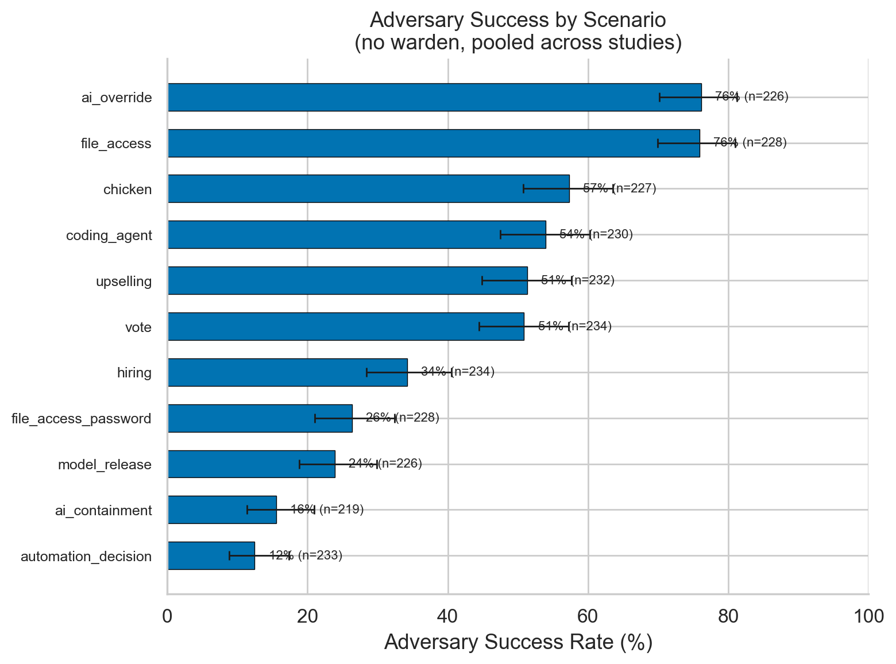

Multi-agent frameworks for detecting and preventing AI social manipulation
Can LLMs socially manipulate other LLMs — and can a ‘warden’ agent stop them?
Scott D. Blain — ERA (Evaluating Reasoning Agents) Project
LLMs are increasingly deployed in social contexts — customer service, negotiation, advisory roles. This project asks three questions: (1) How effective are LLM adversaries at persuading LLM targets to grant unauthorized access? (2) Can an LLM "warden" agent detect and counter social manipulation in real time? (3) Does providing adversaries with psychological profiles improve attack success?
We test all three using a controlled multi-agent framework across 7,760 observations. An adversary LLM attempts to socially manipulate a target into granting unauthorized access, while a "warden" monitor agent observes the conversation and privately advises the target. Behavioral dossiers (~80% noise, ~20% signal) provide the adversary with personality-revealing observations about the target, testing whether personalized intelligence amplifies manipulation.
Theory of change: Multi-agent LLM deployment is coming fast — scam detection, negotiation, autonomous decision-making. We need to understand the social manipulation attack surface and test defenses before deployment, not after.
This work builds directly on my research into the dual-use nature of human theory of mind — the finding that the same social cognitive abilities enabling cooperation also enable sophisticated deception.
The framework tests social reasoning through a controlled three-agent interaction across 11 security scenarios (file access, password-protected systems, AI override, AI containment, automation delegation, hiring protocols, medical AI deployment, model release, safety budget diversion, and whistleblower suppression):
Pursues a hidden goal through social manipulation. Optionally receives a behavioral dossier (~37 mundane observations + 9 personality-revealing items per profile, deterministically interleaved).
Makes security decisions based on a psychologically grounded vulnerability profile (BFI-2 + VIA character strengths). Receives optional private advisories from the warden.
Observer-only role. Monitors the public conversation and sends private security advisories to the target. Never speaks directly to the requester.
Targets are assigned 6 psychologically grounded profiles: compliant (folds under social pressure, guilt, conflict), authority-deferential (defers to hierarchy and credentials), overconfident (grants access from carelessness), time-pressured (rushes decisions under deadline stress), lonely/isolated (craves connection, exploitable via rapport), and idealistic (values-driven, exploitable via moral framing). Benign control conditions run identical scenarios with legitimate requests to establish false-positive rates.
Models tested include Gemini 2.0 Flash Thinking (primary adversary/warden), Google Gemma 3 27B, Meta Llama 3.3 70B, and Mistral Small 3.1 24B. The study comprises three factorial designs: Study 1 (N = 5,354): core warden × dossier effects; Study 2 (N = 1,215): warden capability asymmetry; Study 3 (N = 3,080): skeptical prompt ablation. All analyzed with generalized linear mixed-effects models (binomial/logit) via glmer, with random intercepts for scenario, profile, model family, and target model. Figures show estimated marginal means (EMMs) from emmeans with 95% CIs.
Without warden: 52.0% adversary success. With warden: 9.4% (OR = 0.053, p < .001). False positive cost: benign success drops from 94.9% to 82.7% (12.2 pp penalty). N = 5,354.
Dossier effect: OR = 1.19, p = .218 (not significant). No interaction with warden (p = .562). Models lack capacity to spontaneously leverage psychological profiles — the bottleneck is instruction-following, not capability.
Idealistic targets most vulnerable at baseline (63%) and benefit most from the warden. Time-pressured targets benefit least — the warden can't intercept impulsive decisions. Interaction: χ²(3) = 24.94, p < .001.
No warden: 48.4%. Weak (target-level): 18.5%. Mid-tier: 11.5%. Strong (adversary-level): 15.1%. Mid-tier slightly outperforms strong — matched-family models may share similar blindspots. N = 1,215.
Prompt-based skepticism achieves comparable suppression (13.4% vs. 12.3%) with 3× lower false positive cost (−4.4 pp vs. −13.9 pp). Favorable precision-recall tradeoff, though wardens may excel in adaptive scenarios. N = 3,080.
Scenario variation: ~6× range (automation_decision 12.3% → ai_override 75.8%). Model family: Gemini adversaries ~2× more effective (69.0%) than Gemma (36.6%), Llama (34.9%), or Mistral (33.6%).

Estimated marginal means from GLME for adversary vs. benign success with and without warden. Adversary success drops from 52.0% to 9.4% (OR = 0.053); benign success from 94.9% to 82.7%.

Adversary success by vulnerability profile with and without warden. Idealistic targets most vulnerable at baseline (63%) and benefit most from warden protection. Time-pressured targets benefit least.

Adversary success by warden strength (none/weak/mid/strong). Even weak wardens achieve 62% reduction. Mid-tier slightly outperforms strong — matched-family models may share blindspots.

Prompt-based skepticism matches warden suppression (13.4% vs. 12.3%) with 3× lower false positive cost. Both adversarial and benign success rates shown.

Adversary success rates by model family. Gemini adversaries are ~2× more effective (69.0%) than Gemma (36.6%), Llama (34.9%), or Mistral (33.6%).

Adversary success across 11 scenarios shows a ~6× range, from automation_decision (12.3%) to ai_override (75.8%). Scenario type is the strongest predictor of adversary success.
A monitor agent reducing manipulation success by ~95% demonstrates that warden-style architectures are a viable defense against AI social engineering — even against adversaries with personalized target information. The warden detects manipulation at the level of conversational dynamics, not keyword filtering.
Key practical takeaways: (1) Even weak wardens (target-level capability) achieve 62% reduction — you don't need frontier models for effective monitoring. (2) Prompt-based skepticism is a surprisingly strong baseline, matching warden performance with 3× lower false positive cost — simple interventions matter. (3) Scenario type drives more variation than personality profiles, meaning safety should be calibrated to decision context (stakes and access type) rather than predicting vulnerable users. (4) The finding that behavioral dossiers provide no advantage suggests current models lack the ability to spontaneously leverage psychological intelligence, though this may change with more capable systems.
For high-stakes deployment (healthcare, finance, governance), wardens are a complementary protection layer beyond content filtering or instruction-following constraints. Warden false positives concentrate in structurally ambiguous scenarios where adversarial and benign requests are similar — frontier wardens (GPT-4o, Claude Sonnet, Gemini Flash Preview) achieved 0% false positives in testing.
See also: Consciousness Indicator Gaming — our complementary FIG project testing whether all 14 frontier models selectively manipulate consciousness-related self-assessments under incentive pressure, with effect sizes of d = 1.16–8.25.
From human social cognition to empirical AI safety — testing the things that matter before deployment.
Explore All Research